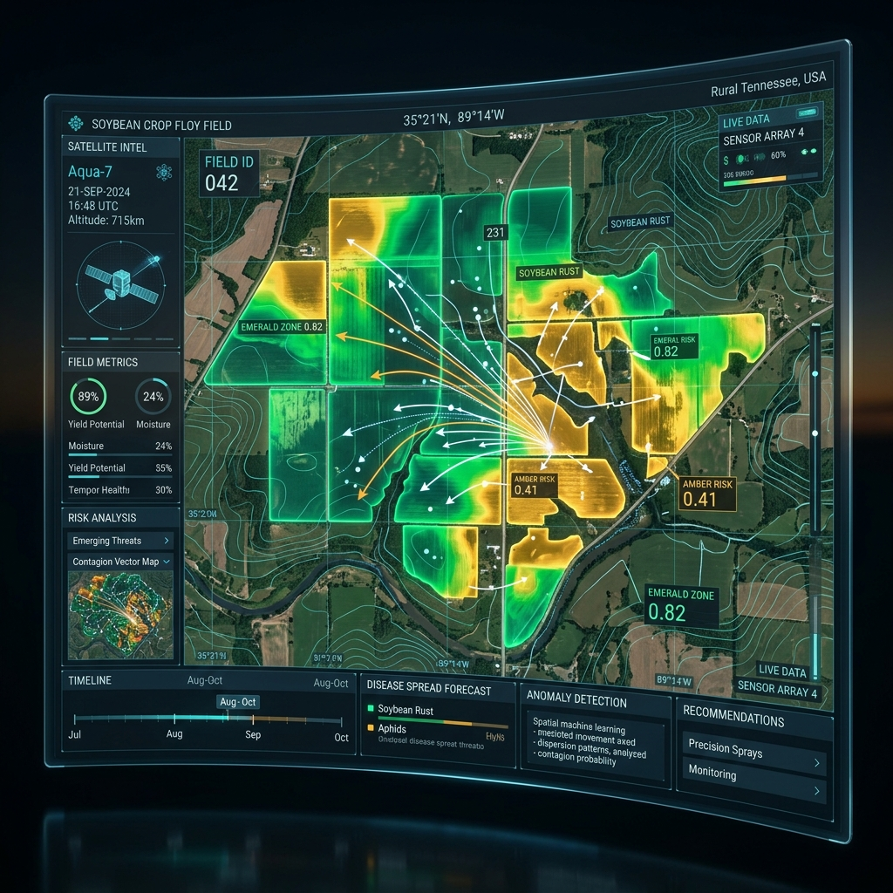

Detección y predicción del riesgo de Roya de la Soja con Inteligencia Espacial
Transformamos el monitoreo fitosanitario tradicional combinando teledetección satelital, microclima continuo y Spatial Machine Learning. Anticipamos focos de infección de Phakopsora pachyrhizi hasta con 14 días de antelación, protegiendo rindes y optimizando aplicaciones.

Lote Norte #4 - Alerta Crítica
Rocío >8.5h | Índice de riesgo: 89%
Autocorrelación Espacial
Moran's I: 0.76 (p < 0.001)
La Roya Asiática de la Soja: Una amenaza silenciosa de alta dispersión
¿Por qué los métodos actuales de monitoreo llegan tarde y por qué el Machine Learning convencional falla al ignorar la geografía?
Pérdidas de hasta el 80% del rinde
El hongo Phakopsora pachyrhizi provoca defoliación prematura acelerada, impidiendo el llenado de grano. Sin intervención oportuna, un lote puede perder más del 70% de su rendimiento en menos de 21 días.
- • Pérdidas económicas millonarias en el Cono Sur cada campaña.
- • Costos de fungicidas que superan los $40 USD/hectárea por pasada.
El monitoreo visual llega tarde
Cuando un agrónomo detecta pústulas a simple vista con lupa en el estrato medio o bajo, la infección ya ocurrió hace 7-10 días y el inóculo de esporas ya se encuentra dispersado en lotes vecinos por el viento.
- • Imposible recorrer exhaustivamente miles de hectáreas a tiempo.
- • Aplicaciones reactivas de rescate con menor eficacia curativa.
La falacia de los modelos I.I.D.
El Machine Learning tradicional asume que las observaciones son independientes e idénticamente distribuidas (IID). Ignora la Primera Ley de la Geografía (Tobler): la probabilidad de roya en un lote depende directamente de los lotes linderos y de la dirección eólica.
- • "Data leakage" espacial en validaciones estándar que infla métricas artificialmente.
- • Necesidad de modelar vecindad, distancias y retardos espaciotemporales.
Comprendiendo el Microclima Crítico de Infección
Para que la espora de la roya germine y penetre la cutícula foliar de la soja, se requiere una ventana biológica muy precisa:
El Pipeline de Spatial Machine Learning
Cómo transformamos petabytes de datos espaciotemporales en predicciones agronómicas accionables a nivel de lote.
Ingesta Multifuente
Fusión satelital multiespectral (Sentinel-2, Landsat-8/9: Bandas Red-Edge, NIR, SWIR), microclima ERA5-Land horario y red de estaciones meteorológicas en tiempo real.
Feature Engineering Espacial
Cálculo de variables espaciotemporales: Spatial Lags, Moran's I local (LISA), índices espectrales (NDVI, NDRE, EVI), horas acumuladas de rocío y matrices de vecindad W.
Modelos Espaciales Predictivos
Ensamble de Spatial Random Forest, XGBoost geoespacial y regresión logística espacial con regularización de distancia geodésica y buffers espaciotemporales.
Validación Espacial Estricta
Spatial Block Cross-Validation (Buffers de bloqueo espacial de 30 km y horizontes temporales móviles) para eliminar la fuga de datos por contigüidad.
Prevención de Fuga de Información Geoespacial
En datos agrícolas, dos lotes adyacentes comparten clima, tipo de suelo y presión de esporas. Si usamos un K-Fold aleatorio convencional, un lote vecino en el set de entrenamiento "revela" la respuesta del set de prueba, generando un sobreajuste ilusorio.
En GeoRoya ML implementamos Spatial Block Cross-Validation: dividimos el territorio en clústeres espaciales con zonas de amortiguamiento (buffers) de 30 km. Si entrenamos con la zona de Pergamino, evaluamos en Marcos Juárez sin contaminación territorial.
Firmas Multiespectrales de Estrés Prematuro
Las esporas de roya infectan primero el estrato foliar bajo, pero la senescencia y la degradación de clorofila alteran la reflectancia en longitudes de onda específicas antes de que el ojo humano perciba clorosis.
NDRE = (NIR - RedEdge) / (NIR + RedEdge)
Spatial Lag = W · y (Matriz de Pesos Espaciales)
Moran's I = (N / Σw) · (ΣΣ w_ij (y_i - ȳ)(y_j - ȳ)) / Σ(y_i - ȳ)²
Reanálisis Microclimático Horario
La lluvia por sí sola no predice la roya: un chaparrón de 20 minutos con viento fuerte seca la hoja rápidamente. El modelo computa el período continuo de rocío foliar a partir de la depresión del punto de rocío y la radiación neta nocturna.
Cruzamos estos datos con la velocidad y dirección del vector de viento U/V para estimar plumas de dispersión aérea desde focos biológicos confirmados en la región.
Simulador de Riesgo Geoespacial
Interactúa con nuestro gemelo digital agrícola. Haz clic en las parcelas, desliza la línea temporal y cambia de capa para analizar la evolución predictiva de la roya.
Validación del Modelo: Pruebas en Campo y Laboratorio
Resultados auditados mediante Spatial Cross-Validation y contraste con datos de campo (Ground Truth) en campañas agrícolas reales.
AUC-ROC Geoespacial
Evaluado en bloques espaciales independientes de 30 km para evitar sobreajuste por proximidad territorial.
Anticipación Promedio
Ventana de tiempo ganada respecto a la primera observación de pústulas en monitoreo a campo tradicional.
Precisión en Zonas Críticas
Capacidad para clasificar correctamente lotes con inóculo activo antes de superar el 5% de severidad foliar.
Trampas de Esporas Volumétricas
Instalación de trampas tipo Burkard de 7 días georreferenciadas para contabilizar concentración de urediniosporas/m³ de aire durante el llenado de grano (R1-R6).
Microscopía y PCR en Hoja
Muestreo sistemático de 100 folíolos por lote en estratos bajo, medio y alto. Confirmación fitopatológica por microscopio óptico y qPCR confirmatorio.
Registro Microclimático Local
Estaciones agrometeorológicas iMETOS en parcela para correlacionar horas exactas de mojado foliar y temperatura con reanálisis ERA5.
Impacto de la Matriz: Minimizar los Falsos Negativos (escape de enfermedad) es la prioridad fitosanitaria número 1. Nuestra tasa de escape es menor al 3.4%, garantizando seguridad absoluta al productor.
Fase Piloto Núcleo (Córdoba & Santa Fe)
Validación sobre 34,000 hectáreas distribuidas en 22 establecimientos agrícolas. Validación de predicción de entrada de frente húmedo desde Paraguay y norte argentino.
Expansión Multirregional (NEA & Litoral)
Escalamiento a 85,000 hectáreas con inclusión de datos Sentinel-2 y calibración de bandas Red-Edge para cultivares de ciclo corto y largo.
Público Objetivo: ¿A quién beneficia esta innovación?
Diseñado para toda la cadena de valor de la producción sojera y la toma de decisiones fitosanitarias de precisión.
Productores y Administradores de Campos
Productores de mediana y gran escala que buscan maximizar el margen bruto por hectárea y cuidar sus lotes.
Ingenieros Agrónomos & Asesores Fitosanitarios
Profesionales responsables de la prescripción técnica y la sanidad vegetal en múltiples establecimientos.
Cooperativas Agrícolas & Acopios Regionales
Organizaciones que gestionan la logística de agroquímicos y asesoran a comunidades de productores asociados.
Aseguradoras Agrícolas, I+D & AgTechs
Compañías financieras y desarrolladoras tecnológicas que precisan métricas objetivas de riesgo biológico.
Calculadora de Retorno y Sostenibilidad
Estima cuánto dinero, producto químico y huella ambiental puede ahorrar tu establecimiento agrícola aplicando Spatial Machine Learning.
El Equipo Detrás del Proyecto
Un equipo multidisciplinario en la intersección de la Ciencia de Datos Espaciales, la Fitopatología y la Ingeniería de Software Agronómica.
Ing. Marcos V. Benítez
Líder de Spatial Data Science & MLEspecialista en Modelado Predictivo Geoespacial, Geoestadística y Algoritmos de Machine Learning aplicados al agro. Investigador en el área de Spatial Cross-Validation.
Dra. Elena Santillán
Directora Científica & FitopatólogaDoctora en Ciencias Agropecuarias con más de 12 años investigando la epidemiología de Phakopsora pachyrhizi, curvas de esporulación y resistencia a fungicidas en soja.
Lic. Camila Duarte
Especialista en Teledetección & GISExperta en procesamiento de constelaciones satelitales Sentinel-2 y Landsat, calibración de firmas espectrales Red-Edge y cálculo de índices de estrés foliar continuo.
Agustín Morales
Ingeniero MLOps & Arquitectura CloudDiseño de pipelines de inferencia automatizada en la nube, ingesta horaria de modelos numéricos ERA5-Land y desarrollo de APIs geoespaciales de alta disponibilidad.
Proyecto en el Marco de Innovación en Machine Learning
Desarrollado en articulación académica e investigativa para la cátedra de Machine Learning (ML1) y facultades de ciencias agropecuarias y exactas. Compatible con protocolos de alerta fitosanitaria y redes de monitoreo agronómico de Sudamérica.
Preguntas Frecuentes
Todo lo que necesitas saber sobre la implementación, precisión y uso práctico de GeoRoya ML.
Una estación meteorológica solo mide variables en un punto puntual. Si llueve a 5 km, no lo registra. Además, el clima es solo una condición necesaria pero no suficiente: se necesita inóculo presente. GeoRoya ML modela la autocorrelación espacial del inóculo biológico (si hay focos activos a favor del viento) y fusiona teledetección satelital de 10m para evaluar la biomasa y susceptibilidad del cultivo en cada lote específico.
La resolución óptica satelital es de 10 x 10 metros por píxel proveniente de Sentinel-2 (con revisitaciones cada 2 a 5 días y modelos de interpolación temporal). Los datos climáticos y modelos de dispersión eólica se recalculan diariamente con datos horarios continuos de reanálisis y estaciones locales.
No. GeoRoya ML funciona en modo 100% satelital y de reanálisis climático sin necesidad de hardware en campo. No obstante, si el establecimiento cuenta con estaciones meteorológicas propias o sondas IoT, la plataforma las integra mediante API para calibrar aún más el microclima de canopia.
El modelo cuenta con algoritmos de compensación temporal que proyectan la evolución del índice foliar y vigor según el crecimiento acumulado en grados-día (GDD). Además, los factores más críticos para la predicción temprana de infección durante días nublados son el balance de humedad y rocío, que se obtienen de capas meteorológicas independientes de la cobertura de nubes.
Buscamos establecimientos agrícolas, asesores técnicos y cooperativas interesadas en probar la plataforma en parcelas piloto. Completa el formulario al pie de esta página indicando tu ubicación y superficie para coordinar la parametrización de tus lotes.
Súmate a la Red de Validación Agrícola
Estamos seleccionando productores, asesores técnicos y centros de investigación para validar la plataforma durante la próxima campaña agrícola. Obtén acceso preferencial y mapas predictivos de tus lotes.
Contacto institucional:
innovacion@georoyaml.ag
Cátedra Machine Learning • Proyecto I+D Fitosanitario